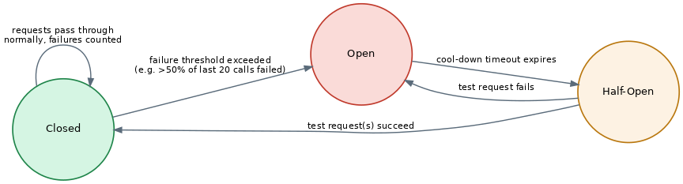
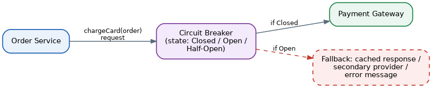

Circuit Breaker Pattern
Table of Contents
Overview
Imagine a customer-facing app that talks to ten other services behind the scenes. Most of the time everything works, but every so often one of those services gets slow or stops responding entirely. The Circuit Breaker pattern exists to protect an application when that happens, so that one struggling dependency doesn't drag down everything connected to it.
The idea is borrowed directly from electrical engineering. A household circuit breaker watches the current flowing through the wiring, and if it senses something dangerous — a surge that could start a fire — it "trips" and cuts the power immediately, rather than waiting for the wires to melt first. A software circuit breaker plays the same role for network calls: it watches for repeated failures, and once it sees enough of them, it stops sending new requests to the troubled service for a while.
The pattern was first described in detail by Michael Nygard in his book Release It! and was later popularized for a wider audience by software architect Martin Fowler. Today it's rarely built from scratch — libraries such as Resilience4j (Java), Polly (.NET), and the older Netflix Hystrix implement it directly, and modern service mesh tools like Istio/Envoy can apply it automatically at the network level. Circuit breakers show up anywhere one piece of software depends on another over a network: microservices calling each other, apps calling third-party APIs, or services calling a database — anywhere a remote call can fail or hang.
See also this section's own Bulkhead Pattern and Retry Pattern pages, which cover two closely related resilience patterns often paired with a circuit breaker.
The Problem: Cascading Failures in Distributed Systems
In a single, monolithic application, one part of the code calling another is just a function call in memory — it either works or throws an error almost instantly, with no network involved and very little room for slow, unpredictable failure. Microservices architectures give up that safety: services talk to each other over a network, and networks are unreliable. A service can be slow because it's overloaded, it can be mid-deployment, or it can have simply crashed.
The dangerous part isn't that a service fails — it's that the failure can spread. Picture an online store where the checkout service calls a recommendations service to show "you might also like" items. If the recommendations service doesn't fail fast but instead hangs for several seconds before timing out, every checkout request that touches it also hangs, tying up a thread or connection while it waits. If enough shoppers check out at the same time, the checkout service runs out of available threads or connections just waiting on a feature that was never critical in the first place.
This is how a small, low-priority problem becomes a big one. If another service depends on checkout, its threads start piling up too, waiting on a service that is itself waiting on something else. This chain reaction is called a cascading failure — a single weak link causes services further up the chain to slow down or fail, until the whole system is affected, even though only one component was actually broken. Without something like a circuit breaker in place, an application has no way to "give up" on a bad dependency: it keeps sending requests, keeps waiting on timeouts, and if it's also blindly retrying failed calls, it can make matters worse by adding even more load onto a service that's already struggling to recover.
The Circuit Breaker Solution: Closed, Open, and Half-Open
Instead of letting a service call a dependency directly, the Circuit Breaker pattern places a small "gatekeeper" object in between. This gatekeeper remembers recent history — how many calls succeeded, how many failed — and uses that history to decide whether it's safe to let the next call through at all. The gatekeeper behaves like a state machine with three states:
- Closed — the normal, healthy state. Every request passes through to the real service, and the breaker quietly counts successes and failures in the background, usually over a rolling window such as "the last 20 requests" or "the last 10 seconds."
- Open — if failures cross a defined threshold (for example, more than half of recent requests failed), the breaker "trips" and moves to Open. While open, it doesn't even attempt to contact the real service — it fails immediately or returns a fallback response. This protects the caller from wasting time on a doomed call, and it gives the struggling service breathing room to recover instead of being bombarded with more traffic.
- Half-Open — after a cool-down period, the breaker cautiously lets a small number of "test" requests through. If those succeed, it assumes the dependency has recovered and moves back to Closed. If they still fail, it goes straight back to Open and the timer restarts.

Deciding what to do while the breaker is Open matters just as much as tripping it in the first place. A well-designed system returns something useful instead of a raw error — cached data from an earlier successful call, a sensible default value, or a clear "try again shortly" message. This is called a fallback, and it's what turns a hard failure into a graceful degradation that customers barely notice.
An Example: Charging a Card Through a Circuit Breaker
Consider an order service in an e-commerce app that needs to call a payment service to charge the customer's card. Here is roughly how a call flows through a circuit breaker:
- The order service asks the circuit breaker to make the "charge card" call instead of calling the payment service directly.
- The breaker checks its current state. If it's Closed, it forwards the request to the payment service as normal.
- The payment service responds successfully — the breaker records a success and resets its failure count.
- Later, the payment service starts timing out. The breaker records each failure, and once the failure count crosses its threshold, it flips to Open.
- For the next 30 seconds (a configurable cool-down), every new charge request is stopped by the breaker before it ever reaches the payment service. The order service immediately gets back a "payment temporarily unavailable, please try again" message instead of waiting on a hung connection.
- After 30 seconds, the breaker allows one test request through (Half-Open). If it succeeds, the breaker closes and normal traffic resumes; if it fails, the breaker reopens and waits another cool-down period.
In simplified pseudo-code, the same flow looks like this:
function chargeCard(order):
if breaker.state == OPEN:
if breaker.coolDownExpired():
breaker.state = HALF_OPEN
else:
return fallbackResponse("Payment temporarily unavailable")
try:
result = paymentService.charge(order)
breaker.recordSuccess()
return result
catch (error):
breaker.recordFailure()
if breaker.failureThresholdExceeded():
breaker.state = OPEN
return fallbackResponse("Payment temporarily unavailable")Performance Implications and Special Considerations
The breaker itself is cheap to run — it's really just a few counters and a timer — so it adds almost no measurable overhead to a normal request. The real engineering effort goes into tuning it correctly. If the failure threshold is too sensitive, the breaker trips on ordinary, temporary blips and starts rejecting requests the service could actually have handled (a false positive). If it's too lenient, it fails to trip in time and the cascading failure it was meant to prevent happens anyway.
Key settings to think about include the failure-rate threshold (what percentage of calls must fail), a minimum volume of requests before the breaker even starts judging (so one unlucky call doesn't trip it), the length of the rolling window used to measure failures, and how long the cool-down period should last before trying Half-Open again.
Circuit breakers work best as one piece of a bigger resilience strategy, not as a standalone fix. They're usually paired with timeouts (so a single call can't hang forever) and with the Retry pattern (so transient errors get a reasonable second try, but the breaker stops the retries once the failure looks persistent). Each downstream dependency should generally get its own breaker instance — lumping all outbound calls under one shared breaker means an unrelated failure can needlessly block traffic to a perfectly healthy service.
Finally, because a breaker's whole job is to react to failure, teams should actually test that it works — for example using fault-injection or "chaos engineering" style testing, deliberately failing a dependency in a controlled way to confirm the breaker trips, the fallback behaves correctly, and the system recovers cleanly once the dependency comes back. It's also worth logging and alerting on state changes (Closed to Open), since that's a strong early signal that a dependency is in trouble.
System Design Examples
Netflix is one of the best-known examples of this pattern at scale. Its internal library, Hystrix, wrapped every call between Netflix's many backend services in a circuit breaker, so that if one service — say, a ratings or recommendations service — became slow, it wouldn't take down unrelated parts of the streaming experience like browsing or playback. Hystrix has since been succeeded by newer libraries like Resilience4j, but the underlying idea it popularized remains standard practice in large-scale microservices systems.
A more everyday example is an e-commerce checkout that depends on an external payment gateway. The order service wraps its call to the gateway in a circuit breaker. When the gateway is healthy, checkouts flow normally. If the gateway starts failing, the breaker trips, the order service stops hammering it, and the app can either fall back to a secondary payment provider or show shoppers a clear message — keeping the rest of the site (browsing, cart, account pages) fully functional the whole time.
